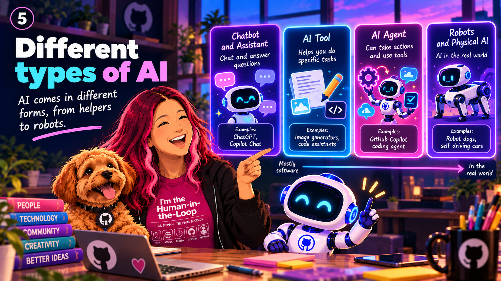

Chapter 04 / 17
Different types of AI
Not every AI system does the same job. Some classify what they see, while others suggest what might come next.
Recognise and predict
A classifier might identify an animal in a photo. A prediction system might estimate tomorrow's demand for buses using past journeys.
Create and suggest
Generative AI can produce new text, pictures, or code based on learned patterns. Recommendation tools suggest items you might enjoy, but you can still choose for yourself.